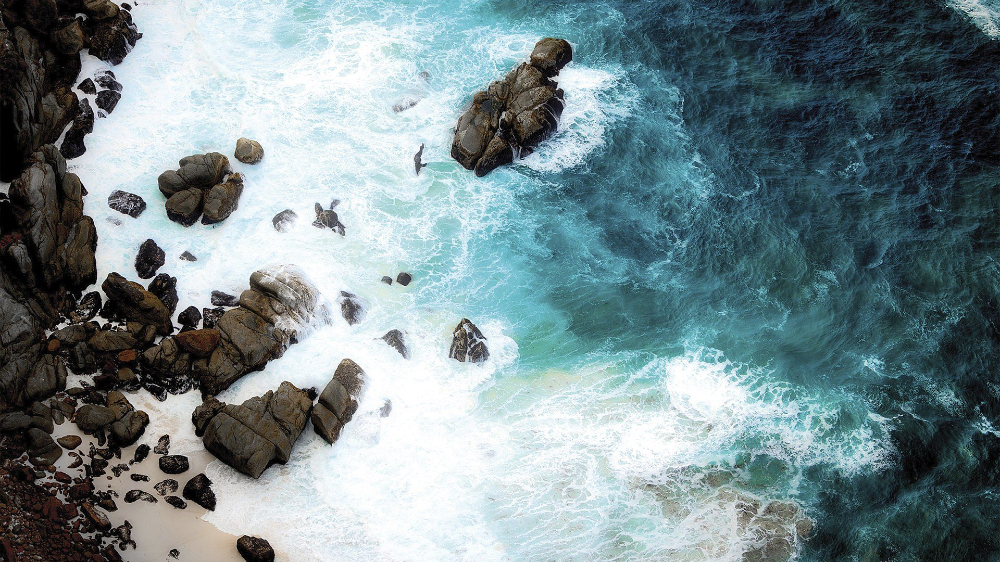

Sarah's open edition photographs - signed prints produced on museum-grade archival materials and available in open quantity, so collectors can bring the natural world into any home or space. Iconic wildlife, landscape, and water imagery from Africa, the American West, and beyond.
View All Editions →Each work in the Collector's Reserve Edition is a signed, numbered limited-edition print - produced on museum-grade archival materials and backed by a personal guarantee from the artist. These are photographs that collectors treasure for a lifetime.
View Collector's Reserve Edition →Every photograph in this collection is more than an image - it is a commitment. Each signed, limited-edition print is produced on museum-grade archival materials, numbered within its edition, and backed by a personal guarantee from the artist.
When you collect a work by Sarah L. Glabman, you are not simply purchasing a photograph. You are acquiring a piece of the world as she witnessed it - with the assurance that its value, its quality, and its story will endure.

"Some moments are too beautiful to keep to yourself.
Photography is my way of sharing them."
For more than two decades, photography was my profession. Then it became my calling.
In 2024, a journey through the wild landscapes of Africa transformed the way I saw the world. Standing among elephants in Botswana, watching the sun rise over Namibia’s ancient deserts, and witnessing nature unfold on its own terms reminded me why I first picked up a camera.
Today, I travel the world creating museum-quality fine art landscape and wildlife photography that captures not only what a place looks like, but what it feels like to stand there. Every image in this collection is born from patience, adventure, and a deep respect for the natural world.
Each artwork is produced using archival museum-grade materials and crafted to become a lasting centerpiece for collectors, luxury homes, and thoughtfully designed spaces.
Read My Story →